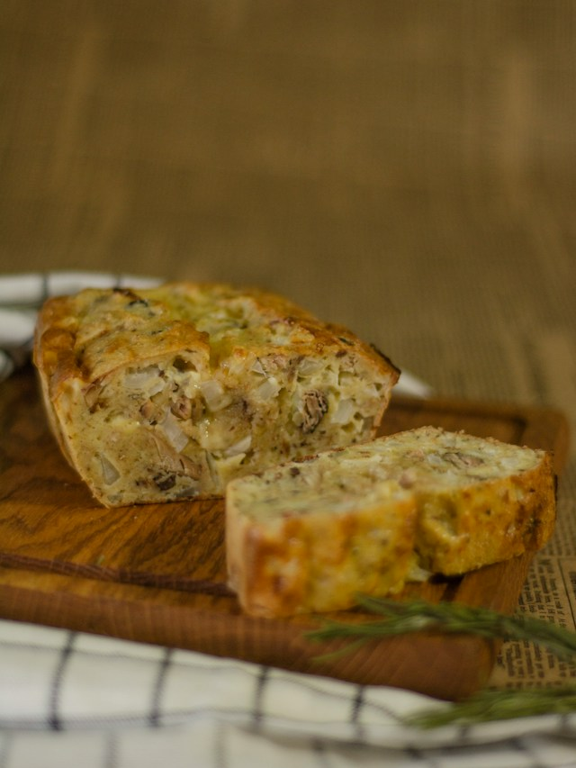

Torta de Frango Cremosa

Descrição
A torta de frango é um prato salgado assado, muito popular no Brasil, feito com uma massa
(que pode ser líquida de liquidificador ou podre/quebradiça) recheada com frango cozido, desfiado e
bem temperado.
Ingredientes
-
Recheio:
-
2 colheres (sopa) de óleo
-
1 cebola média picada
-
1 talo de salsão com folhas picado
-
1 cenoura grande picada
-
1 peito de frango grande, sem pele e sem osso, cozido e desfiado (540 g)
-
2 pitadas de pimenta-do-reino preta em pó
-
1 sachê de Tempero SAZÓN® Verde
-
meia colher (chá) de sal
-
1 e meia xícara (chá) da água do cozimento do frango (300 ml)
-
1 e meia xícara (chá) de requeijão culinário (300 g)
-
Massa:
-
1 xícara (chá) de óleo (200 ml)
-
2 xícaras (chá) de farinha de trigo (220 g)
-
3 ovos
-
1 xícara (chá) da água do cozimento do frango (200 ml)
-
meia xícara (chá) de leite (100 ml)
-
1 sachê de Tempero SAZÓN® Laranja
-
2 pitadas de sal
-
meia xícara (chá) de queijo tipo parmesão ralado
-
1 colher (sopa) de fermento em pó
Modo de preparo
-
Faça o recheio: em uma panela média, coloque o óleo e leve ao fogo médio para aquecer.
Junte a cebola e o salsão e refogue por 3 minutos, ou até dourarem. Acrescente a cenoura,
o frango, a pimenta, o Tempero SAZÓN® e o sal, e refogue por 5 minutos. Adicione a água e
cozinhe por 3 minutos, ou até a cenoura ficar “al dente”. Retire do fogo, junte o requeijão e
misture. Reserve.
-
Prepare a massa: no copo de um liquidificar, coloque o óleo, a farinha de trigo, os ovos,
a água, o leite, o Tempero SAZÓN®, o sal e metade do parmesão, e bata na velocidade média por
3 minutos, ou até ficar homogêneo. Junte o fermento e bata rapidamente.
-
Em uma forma redonda (28 cm de diâmetro), untada e enfarinha, distribua metade da massa e com
o auxílio de uma colher, espalhe o recheio de frango. Cubra com o restante da massa,
polvilhe o parmesão restante na superfície e leve ao forno médio (180 graus), preaquecido,
por 35 minutos, ou até dourar levemente.
-
Retire do forno e sirva em seguida.
Back to Home